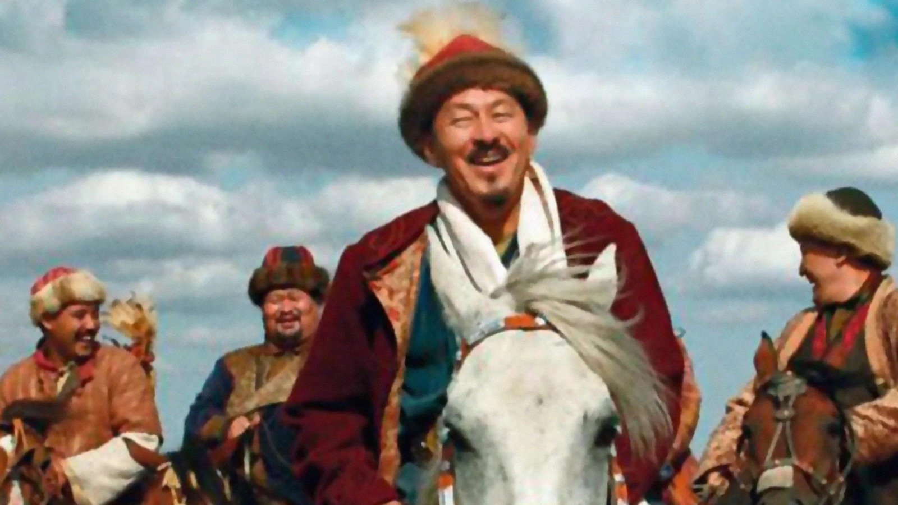
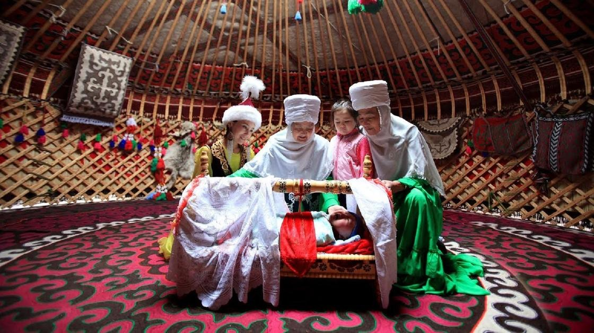
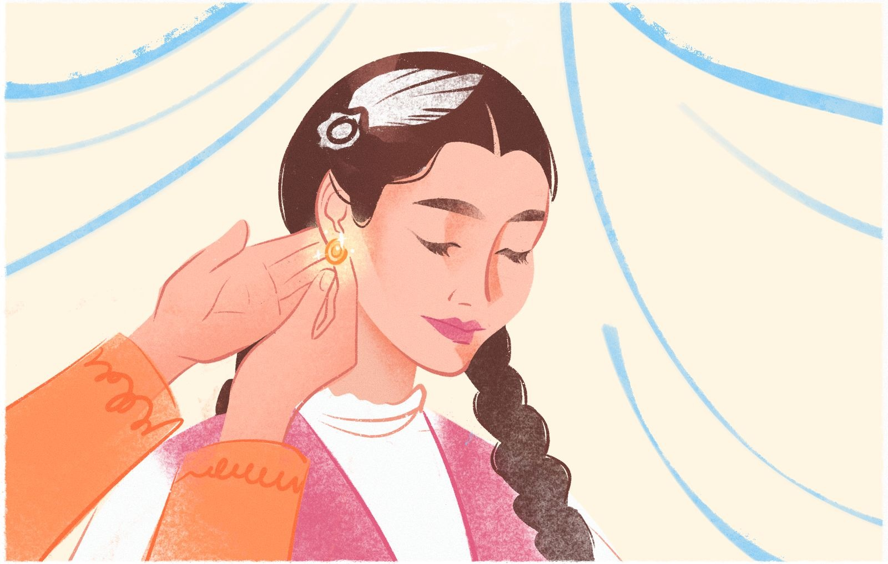
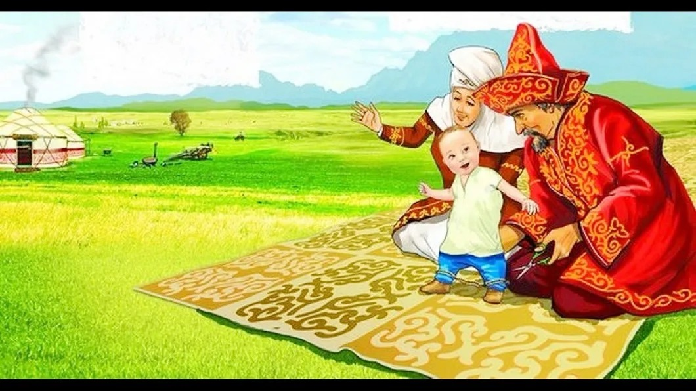

2-ТАПСЫРМА
Ұлттық мәдениет және салт-дәстүр
I. Теория
Мақсаты: Халқымыздың дәстүрлерін түсінеді, ажыратады, таниды.
Міндеттері: Үлкенді құрметтеуге, еліміздің дәстүрлерін ұғынуға тәрбиелеу.
Бағалау критерийлері: Мәтіндегі негізгі ойды анықтау, көтерілген мәселеге баға беріп, мәліметтер мен пікірлерді өңдей білу.
Дәрістің қысқаша тезистері
Мәдениетті ұлттық салт-дәстүр мен әдет-ғұрыптан бөлек алып қарау үлкен қателікке ұшыратады. Ата-бабаларымыз бірін-бірі сыйлап, соның арқасында рухани құндылықтарды бойларына жинап, ұрпақтан ұрпаққа дарыта білді. Бізге жеткен ұлттық дәстүр мен әдет-ғұрыптың бәрі де осыны аңғартады.
Қазақстан Республикасының Президенті Н.Назарбаевтың Қазақстан халқына «Қазақстан 2050» Стратегиясы: қалыптасқан мемлекеттің жаңа саяси бағыты» атты Жолдауында:
«Дәстүр мен мәдениет – ұлттың генетикалық коды. Патшалықтың, төңкеріс дүмпуі мен тоталитаризмнің барлық ауыртпалығы мен қиыншылықтарына қарамастан, біздің еліміздің аумағында тұратын қазақтар және басқа да халықтардың өкілдері өздерінің мәдени ерекшеліктерін сақтай алды. Тәуелсіздік жылдарында біздің мәдени іргетасымыз беки түсті. Қазақстан – бірегей ел. Біздің қоғамда әртүрлі мәдени элементтер бір-бірімен біріккен және бірін-бірі толықтырып тұрады. Біз өзіміздің ұлттық мәдениетіміз бен дәстүрлерімізді қорғауымыз керек, мәдени игілігімізді бөлшектеп болса да жинастыруымыз керек»
деген болатын. Сондықтан да егеменді ел болып, өз тіліміз бен дініміздің тізгіні өз қолымызға берілгендіктен, мәдениетімізді жабайы көріністерінде жаңғыртуға тырысатындардың жолын бөгеп, оны ата-бабаның салт-дәстүрімен суарып жандандыра алсақ қана, оның ұлттық тарихи бейнесі сомдалмақшы. Қазақ мәдениеті мен салт-дәстүрін, оның тұнып жатқан асыл маржандарын толықтай жинақтап, қазіргі жастарға жеткізу – біз үшін парыз. (Б.Төлеуғалиұлы)
Бақылау сұрақтары:
- Ұлттық мәдениет деген не?
- Ұлттық мәдениет пен салт-дәстүрдің арасында қандай байланыс бар?
- Ұлттық генетикалық код деген не?
Тапсырманы орындау бойынша нұсқаулық (орындау тәртібі):
- Мәтінді түсініп оқиды, түсінгенін айтады.
- Сұрақтарға жауап береді.
Тапсырмадан күтілетін нәтиже: Берілген ақпаратты оқу, сұрақтарға жауап беру.
Тапсыру формасы: Ауызша түрде.
II. Практика (СӨЖ № 2.2)
1-тапсырма.
Тапсырма: Суреттердегі фильмдер туралы білетін мәліметтеріңді кестеге түсіріңдер.
1-фильм
2-фильм
3-фильм

4-фильм
| Фильм атауы | Режиссері | Басты кейіпкерлер | Ойнаған актерлер |
|---|---|---|---|
Тапсырманы орындау бойынша нұсқаулық:
- Суреттегі фильмдердің атауын анықтайды;
- Суреттегі фильмдердің режиссерін анықтайды;
- Суреттегі фильмдердің басты кейіпкерлерін анықтайды;
- Суреттегі фильмдерде ойнаған актерлерді анықтайды.
2-тапсырма.
Тапсырма: Еркін Шәкірұлының «Қазақ киносындағы салт-дәстүр» мақаласын (02. mp3 аудиожазбасы) тыңдап, негізгі ойды анықтаңдар, ғаламдық мәселелермен байланыстырыңдар.
Тапсырманы орындау бойынша нұсқаулық:
- Берілген сілтеме бойынша аудиожазбаны тыңдайды;
- Негізгі ойды анықтайды;
- Ғаламдық мәселелермен байланыстыра алады.
3-тапсырма.
Тапсырма: Суретте берілген салт-дәстүрге қатысты толық ақпарат дайындаңдар.

1-салт-дәстүр

2-салт-дәстүр

3-салт-дәстүр
Тапсырманы орындау бойынша нұсқаулық:
- Суретте берілген салт-дәстүрлер бойынша ақпарат дайындайды;
- Әр салт-дәстүрдің мән-мағынасын ашады;
- Тәрбиелік мәнін түсіндіреді.
Тапсырмадан күтілетін нәтиже: Практикалық тапсырмаларды орындайды.
Тапсыру формасы: Жазбаша, ауызша түрде.
Модуль / пән бойынша ұсынылатын әдебиеттер тізіміне сілтемелер: Okulyk.kz - Қазақ тілі (10-сынып)
III. Бағалау парағы
| № | Тапсырма | Дескрипторлар | Ұпай саны | Студенттің ұпай саны |
|---|---|---|---|---|
| 1 | Бақылау сұрақтары: |
• Мәтінді түсініп оқиды, мәтіннен түсінгенін айтады • Ережелерді оқып, есте сақтап алады • Сұрақтарға жауап береді |
10 балл 10 балл 10 балл |
|
| 2 | Суреттердегі фильмдер туралы білетін мәліметтерін кестеге түсіріңдер |
• Суреттегі фильмдердің атауын анықтайды; • Суреттегі фильмдердің режиссерін анықтайды; • Суреттегі фильмдердің басты кейіпкерлерін анықтайды; • Суреттегі фильмдерде ойнаған актерлерді анықтайды |
5 балл 5 балл 5 балл 5 балл |
|
| 3 | Еркін Шәкірұлының «Қазақ киносындағы салт-дәстүр» мақаласын (02. mp3) аудиожазбадан тыңдап, негізгі ойды анықтаңдар, ғаламдық мәселелермен байланыстырыңдар |
• Берілген сілтеме бойынша аудиожазбаны тыңдайды; • Негізгі ойды анықтайды; • Ғаламдық мәселелермен байланыстыра алады |
5 балл 10 балл 10 балл |
|
| 4 | Суретте берілген салт-дәстүрге қатысты толық ақпарат дайындаңдар |
• Суретте берілген салт-дәстүрлер бойынша ақпарат дайындайды; • Әр салт-дәстүрдің мән-мағынасын ашады; • Тәрбиелік мәнін түсіндіреді |
5 балл 10 балл 10 балл |
|
| Барлығы: | 100 балл | / 100 | ||